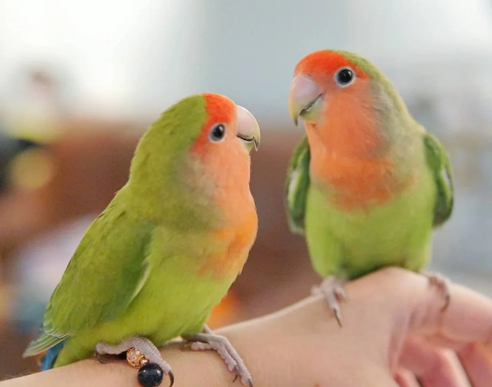

情侶鸚鵡
鸚鵡介紹
情侶鸚鵡，又稱為愛情鸚鵡、愛情鳥（情侶鸚鵡屬 Agapornis、Lovebird，希臘語中「αγάπη agape 'love'; όρνις ornis 'bird')」是愛的意思，而「Ornis」則是雀鳥的意思）。情侶鸚鵡是一種非常喜歡群居及深情親切的鸚鵡，情侶鸚鵡因其深情的天性而得名。情侶鸚鵡會與伴侶形影不離，相依相偎，而且多是會廝守終生。因為情侶鸚鵡這個天性，德國人稱情侶鸚鵡為「die Unzertrennlichen」，而法國人則牠們為「les inséparables」（即英文中的「Inseparables」，意思是「不可分離」）。亦因為這樣，大部份人強烈地認為，情侶鸚鵡必須是一對一對地飼養。有些人相信，情侶鸚鵡像其他的鸚鵡一樣，只要得到足夠的關心及照顧，情侶鸚鵡可以與人建立一個友伴關係。
情侶鸚鵡身長約13厘米—17厘米，展翅後最大為24厘米，體重40克—60克，身型矮胖及有一條短尾，喙部相對為大，大部份情侶鸚鵡都是綠色的，而人工配種及變種使很多的顏色出現。在野外的情侶鸚鵡平均壽命為十年至十五年，但是經人類馴養的情侶鸚鵡亦有二十年的壽命[1]。常見飼養的情侶鸚鵡分為小鸚（面類）、牡丹（頭類）兩大類，各包含數種，兩大類最明顯的差別在於，牡丹有明顯的白眼圈。
